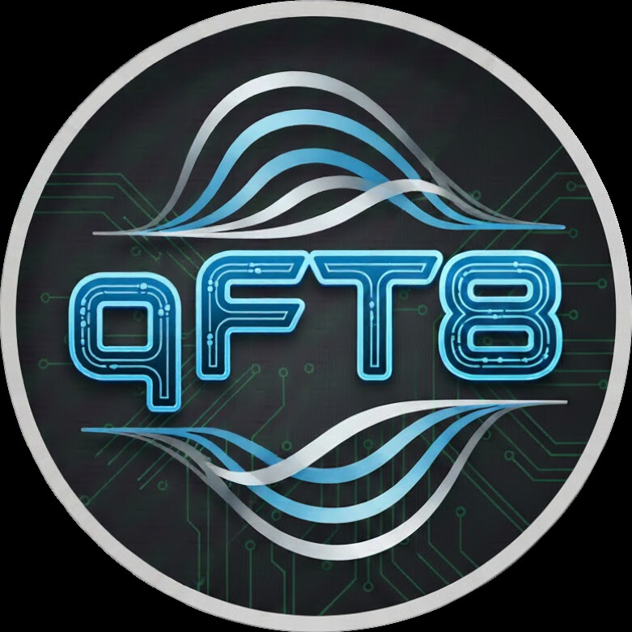
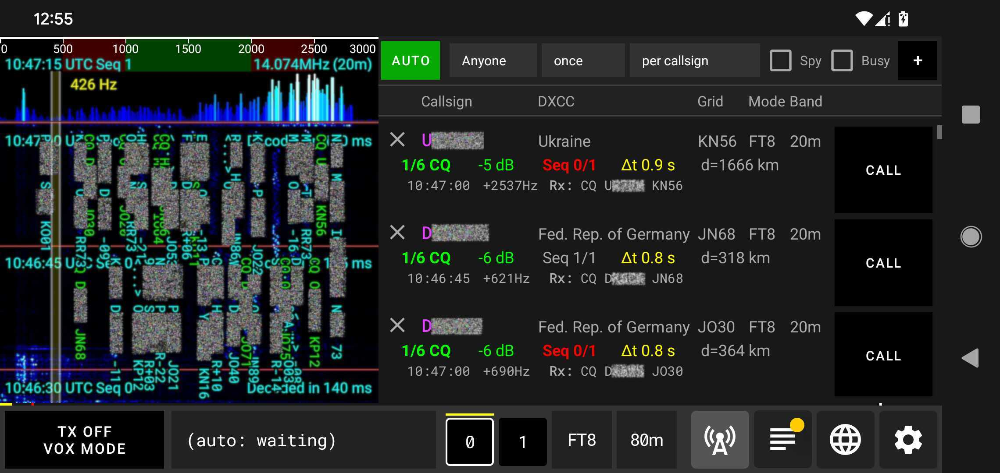
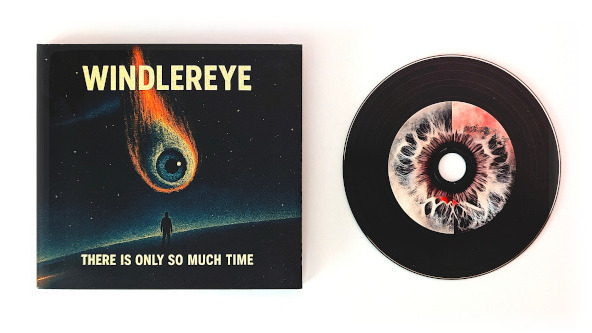

অ্যান্ড্রয়েডের জন্য পোর্টেবল FT8, FT4, FT2, JS8 এবং WSPR


বৈশিষ্ট্য সমূহ
- বিনামূল্যে + বিজ্ঞাপন মুক্ত
- প্লাগ অ্যান্ড প্লে (Plug and Play)
- দ্রুত সেটআপ
- 75টিরও বেশি রেডিও সমর্থন করে
- FT8, FT4, FT2, JS8 এবং WSPR মোড সমর্থন করে
- ৩০টিরও বেশি ভাষা সমর্থন করে
- ম্যানুয়াল CALL মোড এবং স্বয়ংক্রিয় (AUTO) অপারেশন
- স্বয়ংক্রিয় NTP সময় সিঙ্ক
- স্বয়ংক্রিয় আনুমানিক অবস্থান নির্ধারণ
- ADIF লগ ইম্পোর্ট এবং এক্সপোর্ট
- সম্পূর্ণ QRZ ইন্টিগ্রেশন
- সম্পূর্ণ LotW ইন্টিগ্রেশন
- কনফিগারযোগ্য সীমা সহ পুনরায় চেষ্টা করার লজিক
- বিশ্ব মানচিত্র
- SOTA এবং POTA রেফারেন্স ট্র্যাকার
- SOTA এবং POTA ADIF এক্সপোর্ট
- রিমোট অপারেশনের জন্য ওয়েব সার্ভার
- ব্যাটারি সাশ্রয়ী মোড: স্ক্রিন বন্ধ রেখেও চলে
ডাউনলোড
গুগল প্লে স্টোর থেকে অ্যাপটি ডাউনলোড করা বাঞ্ছনীয়।
আপনি নীচের .apk ফাইলটি ডাউনলোড করে ম্যানুয়ালি ইনস্টল করতে পারেন। এর জন্য অ্যান্ড্রয়েড সিস্টেমে কিছু অনুমতির প্রয়োজন হতে পারে (যেমন অজানা উত্স থেকে অ্যাপ ইনস্টল করার অনুমতি দেওয়া, বিকাশকারী বিকল্প সক্রিয় করা ইত্যাদি)।
আমার সঙ্গীত প্রকল্প Windlereye শুনে আমাকে সমর্থন করুন

বিশেষ ধন্যবাদ এবং শীর্ষ অবদানকারীগণ
Roger Ribes González (EA3ISA) — qFT8-এর প্রাথমিক বিকাশ পর্যায় থেকে অমূল্য দিকনির্দেশনা, ঘনিষ্ঠ সহযোগিতা এবং বিস্তৃত ফিল্ড বিটা টেস্টিং, যা SOTA এবং POTA বৈশিষ্ট্যগুলি গঠনে যথেষ্ট অবদান রেখেছে।
Andriy Dinets (UR4LBR) — বিস্তৃত বিটা টেস্টিং এবং স্পেকট্রোগ্রাম রেন্ডারিং, ডিজিটাল সিগন্যাল প্রসেসিং, SNR নির্ভুলতা এবং SOTA ও POTA ক্ষমতা উন্নত করার জটিল সমস্যাগুলি সমাধানে গুরুত্বপূর্ণ সহায়তা।
Rob Colclough (GW8RDI) — QuantumSDR এবং uSDX Open প্রকল্পের নির্মাতা এবং বিকাশকারী। গভীর প্রযুক্তিগত পরামর্শ এবং নিবেদিত পরীক্ষার মাধ্যমে qFT8-কে একাধিক ট্রান্সসিভার এবং বৈচিত্র্যময় অ্যান্ড্রয়েড ডিভাইসে সমর্থনযোগ্য করতে গুরুত্বপূর্ণ ভূমিকা পালন করেছেন।